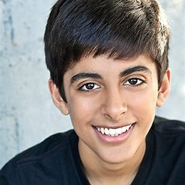
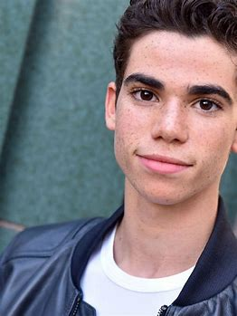
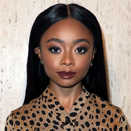
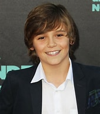

Emma Ross

Emma Evangeline Ross is one of the main characters in Bunk'd. She was born to Morgan Ross and Christina Ross in New York City. She is the only biological child in the Ross family and is also the oldest child. She is currently 22 years old. She has become a fashion designer based in Nashville, Tennessee.
Lou Hockhauser
Louella Dorcas "Lou" Hockhauser is the overall main protagonist of Bunk'd. She is one of the main characters of seasons 1-3 and is the main protagonist of seasons 4-7. Lou is the cheerful head counselor and Emma’s close ally and friend. By Season 4, Lou (with the blessings of the Rosses) has become the owner and Director of Camp Kikiwaka, later on Kikiwaka Ranch.
Ravi Ross
Karan Brar (born January 18, 1999) is an American actor. He portrayed Chirag Gupta in the Diary of a Wimpy Kid film franchise and Ravi Ross on the Disney Channel Original Series Jessie and its subsequent spin-off Bunk'd.
Luke Ross
Cameron Mica Boyce[1] (May 28, 1999 July 6, 2019) was an American actor. He began his career as a child actor, appearing in the 2008 films Mirrors and Eagle Eye, along with the comedy film Grown Ups (2010) and its 2013 sequel. His first starring role was on the Disney Channel comedy series Jessie (20112015).
Zuri Ross
Skai Jackson (born April 8, 2002)[1] is an American actress best known for portraying the role of Zuri Ross in the Disney Channel sitcom Jessie (2011–2015), which she subsequently reprised in its sequel Bunk'd (2015–2018).
Griff Jones
Lincoln Melcher was born on December 12, 2003 in California, USA. He is an actor, known for Alexander and the Terrible, Horrible, No Good, Very Bad Day (2014), Batman: Gotham by Gaslight (2018) and Mr. Church (2016).